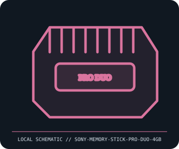

[ REMOVABLE MEDIA // INDIVIDUAL RECORD ]
Sony Memory Stick PRO Duo 4 GB (MS-MT4G)
Sony Memory Stick PRO Duo removable flash-card format. This entry describes the identified medium or reader, not a bundled drive/media pair; exact capacity and compatibility are model- and host-dependent.

IDENTIFICATION: Record the full label, manufacturer part number, revision/date code, format markings, and packaging. Product-family names alone do not identify capacity generation or supported drive.
Format and compatibility
| Catalog subcategory | Flash drives and memory cards |
|---|---|
| Catalog identity | Sony Memory Stick PRO Duo 4 GB (MS-MT4G) |
| Format / era | Sony Memory Stick PRO Duo removable flash-card format |
| Media/device distinction | This record is the removable medium only; the compatible drive is separate and not included. |
| Capacity / interface | Sony MS-MT4G Memory Stick PRO Duo, 4 GB nominal capacity; compact proprietary Memory Stick form factor with MagicGate support and high-speed transfer depending on the host and card revision. |
| Compatibility | Requires a Memory Stick PRO Duo slot; a full-size Memory Stick PRO slot needs the correct passive Duo adapter. Legacy Memory Stick, PRO, PRO Duo, M2, and XC are not a single interchangeable format; host firmware and MagicGate support vary. |
| Variant caveat | MS-MT4G is distinct from similarly named 4 GB Memory Stick PRO-HG Duo products; confirm label, adapter, host maximum, and supported generation. Capacity and access can depend on device filesystem/firmware. |
Media care and preservation
Store in a protective case with contacts covered; avoid bending, static, moisture, and cleaning agents. Never force the card or adapter. Back up camera data promptly and do not rely on obsolete proprietary flash as an only copy.
- Preserve original packaging, labels, and acquisition/context notes; photograph both sides and record any write-protect state before use.
- Keep valuable contents in at least two independently verified copies on separate storage. Record a checksum and test a restore; removable media alone is not a preservation plan.
Model and version caveats
MS-MT4G is distinct from similarly named 4 GB Memory Stick PRO-HG Duo products; confirm label, adapter, host maximum, and supported generation. Capacity and access can depend on device filesystem/firmware.
Compatibility statements are limited to the named format/model and published host support. Check manufacturer manual, firmware, regional SKU, and media generation before inserting or writing. A similar connector or cartridge shell is not proof of compatibility.
Sources & further reading
- Sony — Memory Stick support and manualsManufacturer format/support archive for Memory Stick products and model-specific manuals.
- Sony — Memory Stick format informationManufacturer guide to Memory Stick format variants and host compatibility.
Sources identify the relevant standard, manufacturer, or product family. Where an archived SKU-specific datasheet is unavailable, the exact label/manual and supported host list take precedence over family-level marketing claims.